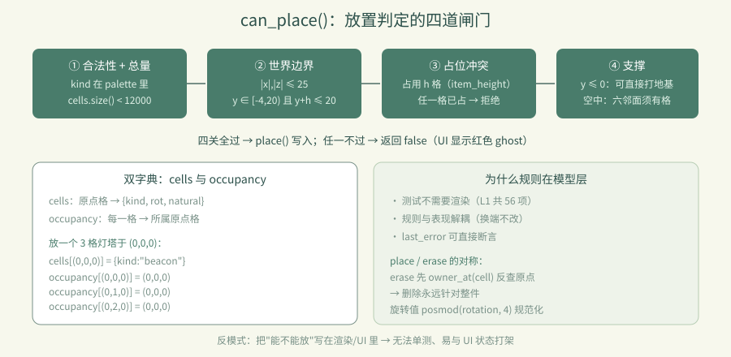
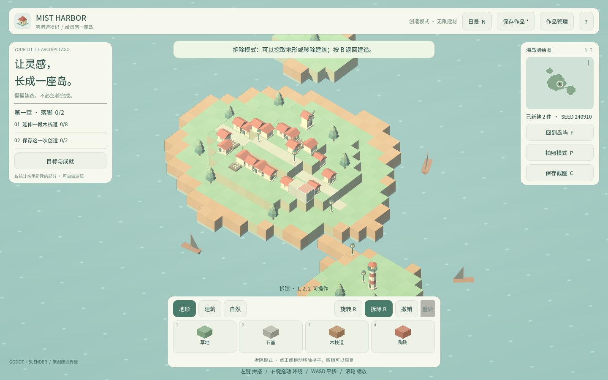
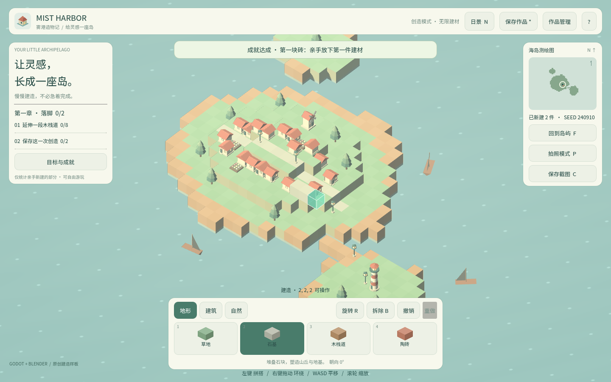

卷 4 · 第 19 章 放置规则：支撑、占位与世界边界
本章目标：读懂
can_place()的四道闸门，理解cells与occupancy双字典
如何解决"多格模型"的问题，以及为什么规则要放在模型层而不是渲染层。
对应任务：T16 / T17 | 对应文件：project/scripts/world_model.gd
19.1 两个字典：cells 与 occupancy
var cells: Dictionary = {} # 原点格 → {kind, rot, natural}
var occupancy: Dictionary = {} # 每一格 → 它属于哪个原点格beacon 高 3 格，放在 (0,0,0)：
cells: (0,0,0) → {kind:"beacon", rot:0}
occupancy: (0,0,0) → (0,0,0)
(0,1,0) → (0,0,0) ← 上半截也指向同一原点
(0,2,0) → (0,0,0)于是查询变成两步：
func has_cell(cell) -> bool: return occupancy.has(cell) # 这一格有东西吗
func owner_at(cell) -> Vector3i: return occupancy.get(cell, cell) # 它属于哪一件
func get_cell(cell) -> Dictionary: return cells.get(owner_at(cell), {})📌 这就是第 06 章"点灯塔上半截会删掉整座"的数据结构基础（第 10 章是渲染侧落地）。
19.2 can_place() 的四道闸门
func can_place(cell, kind) -> bool:
if not palette.has(kind) or cells.size() >= MAX_CELLS: return false # ①
var height := item_height(kind)
if not in_bounds(cell, height): return false # ②
for dy in range(height):
if occupancy.has(cell + Vector3i(0, dy, 0)): return false # ③
if cell.y <= 0: return true # ④a
for direction in [UP, DOWN, LEFT, RIGHT, FORWARD, BACK]:
if occupancy.has(cell + direction): return true # ④b
return false| 闸门 | 规则 | 常量 | ||||
|---|---|---|---|---|---|---|
| --- | --- | --- | ||||
| ① 合法性 + 总量 | 建材必须存在；总数 < 12000 | MAX_CELLS = 12000 | ||||
| ② 边界 | ` | x | , | z | ≤ 25；y ∈ [-4, 20) 且 y + height ≤ 20` | EDGE=25, MIN_Y=-4, MAX_Y=20 |
| ③ 占位冲突 | 每件占用 height 格，任一格已占就不行 | item_height() | ||||
| ④ 支撑 | y ≤ 0（水面/地下）可直接打地基；否则六邻面必须有已占格 | — |
④ 的设计意图：水面上可以凭空起柱子（符合"打地基"直觉），
但空中不能悬空堆放——必须有相邻方块托着。这既防"空中楼阁"，又不限制 creativity。
19.3 为什么规则在模型层，不在渲染层
UI 点击 → main.gd → world.pick() → model.can_place() → 合法才 place()
↑
唯一的裁判好处：
- 测试不需要渲染：L1 的 56 项断言直接调
model.place()（第 29 章） - 规则与表现解耦：换渲染方式、做移动端、做服务端校验，规则都不变
- 错误可见：
last_error记录原因，可直接断言（第 31 章提到）
📌 反模式：把"能不能放"写在
_process或渲染代码里 → 无法单测、容易与 UI 状态打架。
19.4 place() 与 erase() 的对称
func place(cell, kind, rotation=0) -> bool:
if not can_place(cell, kind): return false
var value := {"kind": kind, "rot": posmod(rotation, 4), "natural": false}
_record(cell, {}, value) # before={} → 撤销即删除
if value["rot"] != 0: stats["rotated"] += 1
return true
func erase(cell) -> bool:
var origin := owner_at(cell) # 先反查原点！
if not cells.has(origin): return false
_record(origin, cells[origin].duplicate(), {}) # after={} → 撤销即恢复
stats["removed"] += 1
return true两个细节值得学：
erase第一行就owner_at(cell)——删除永远针对整件，不是被点到的那一格posmod(rotation, 4)——旋转值永远规范到 0–3，避免脏数据
19.5 统计也是数据的一部分
var stats := {"rotated": 0, "undone": 0, "saved": 0, "removed": 0}成就系统直接消费它（undone ≥ 10 → "谨慎的手"；saved ≥ 5 → "档案管理员"）。
把统计放进模型而非 UI，成就计算就有了单一来源（第 13 章）。

🌩 在云端 agent（web-cb）里是什么样
| 🖥 本地路线 | 🌩 云端 agent（web-cb） | |
|---|---|---|
| --- | --- | --- |
| 规则层 | 本地 GDScript | 完全相同（纯逻辑，与平台无关） |
| 验证 | dev.py test（56 项） | 云端 CI 跑同一套，最可靠的一层 |
| 常量调整 | 改 MAX_CELLS 等 | 改完必须跑 L1——断言从常量推导，改了会立刻暴露不一致 |
| 建议 | — | 把四道闸门各写"正例 + 反例"两条断言，云端回归最有价值 |
🌩 规则层是最容易在云端自动化验证的部分：不需要 GPU、不需要浏览器、秒级完成。
19.6 常见坑速查（本章）
| 现象 | 原因 | 处理 |
|---|---|---|
| --- | --- | --- |
| 点上半截只删上半截 | erase 没走 owner_at | 先反查原点 |
| 高模型放不下 | ② 用了 y + height | 边界检查要带高度 |
| 空中能凭空堆 | ④ 只在 y ≤ 0 放行 | 六邻面检查要覆盖空中 |
| 超出 12000 还能放 | ① 用 > 而非 >= | 边界条件是 >= MAX_CELLS |
| 旋转值越来越大 | 没 posmod | posmod(rotation, 4) |
| 规则改了但 UI 没同步 | 规则写在 UI 里 | 收敛到模型层 |
19.7 本章作业
- 画出
cells/occupancy在放置一个 3 格灯塔后的内容（照 19.1 的格式） - 说出四道闸门各自的常量，指出"在 y=19 放 2 格灯塔"会被哪一道拦下
- 解释为什么"水面可打地基、空中必须相邻"是合理的设计取舍
- 给第 ② 道闸门补两条断言（一条边界内成功、一条越界失败），跑
dev.py test验证
🎓 教学提示（给教师 / 直播主）
- 概念锚点：双字典 = 逻辑格 ↔ 物理格的映射，是多格模型的通用解法。
- 课堂演示：放灯塔，用 print 打出两个字典，让学生看到"3 个 key 指向 1 个原点"。
- 高频误解：学生以为
cells一个字典就够。追问：那怎么知道(0,2,0)是灯塔的一部分？ - 讨论题：如果要支持"悬空platform"，第 ④ 道闸门该怎么改？
- 批改要点：作业 2 要答出第 ② 道（
19 + 3 > 20）。
🖼 本章图集


📹 录屏分镜（9 分钟）
| 时间 | 画面 | 解说词要点 |
|---|---|---|
| --- | --- | --- |
| 00:00–02:00 | 双字典示意图（灯塔 3 格） | "逻辑格 vs 物理格。" |
| 02:00–04:30 | 四道闸门逐行读 | "四关，缺一不可。" |
| 04:30–06:00 | place / erase 的对称与 owner_at | "删除永远针对整件。" |
| 06:00–07:00 | stats 与成就的衔接 | |
| 07:00–09:00 | 作业 + 预告（撤销栈） |
🎬 视频位（待录制）
把录好的视频放到course/media/video/19/（mp4 / webm / mov），重新执行 python tools/course_build.py 即会自动内嵌；首帧默认用本章第一张截图作为封面。分镜脚本见上一节。🖼 配图清单
| 文件名 | 内容 | 生成方式 |
|---|---|---|
| --- | --- | --- |
19-place-build.png | 建造若干方块（规则生效的现场） | python tools/course_capture.py --chapter 19 |
19-demolish-mode.png | 拆除模式（ghost 变红/整件高亮） | 同上 |
🎥 直播脚本（L3 片段，10 分钟）
- 开场："点灯塔上半截，会发生什么？"——投票后揭晓（删整座）
- 演示：关掉
owner_at看 bug 复现，再修好 - 互动：让观众设计一个"悬空也能放"的规则变体
- 收尾：预告撤销栈
❓ 本章 FAQ
Q：为什么 MAX_CELLS 是 12000？
A：来自 requirements.md 的性能预算：全量重建 + trimesh 碰撞下的安全上限。
Q：natural 字段是干什么的？
A：标记"起始村庄/地形"等非玩家建造的格子，不计入玩家统计与成就（第 13、18 章）。
Q：能不能一次放多个（笔刷）？
A：main.gd 的 painting 已支持拖动连续绘制（每 0.17s 一次），规则层无需改动。